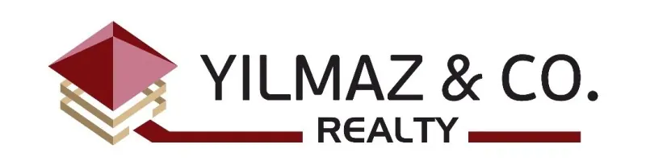
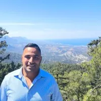

Wir hören zu
In 30 Minuten per Video oder Telefon klären wir deine Ziele, dein Budget und deinen Zeitplan. Danach weißt du, ob Nordzypern zu dir passt.

Erstgespräch →Auswandern nach Nordzypern · persönlich begleitet
Erfahre in 3 Minuten, wie du Schritt für Schritt deinen Traum vom Leben in Freiheit wahr machst. Wir leben hier und begleiten dich von Deutschland bis zur Schlüsselübergabe.
Mehr Sonne. Weniger Papierkram. Wir kümmern uns um Behörden, Verträge und Prüfungen, damit du dich auf dein neues Leben freuen kannst.
In 30 Minuten per Video oder Telefon klären wir deine Ziele, dein Budget und deinen Zeitplan. Danach weißt du, ob Nordzypern zu dir passt.
Aufenthalt und Visum, Auslandskrankenversicherung, Finanzen und der passende Standort. Schriftlich, Schritt für Schritt, mit Zeitplan.
Wir prüfen Grundbuch und Eigentum (Title Deed), Lage und Bauträger, verhandeln für dich und begleiten den Kauf bis zur Unterschrift.
Abholung, Anmeldung, Bankkonto, Anwalt und Arzt. Und auch nach dem Einzug sind wir für dich erreichbar.
Du musst niemanden selbst suchen. Wir verbinden dich mit geprüften Partnern auf der Insel und halten alle Fäden zusammen.
Leistungen
Leben außerhalb der EU will gut vorbereitet sein. Wir ordnen mit dir alles, was vor dem Umzug geklärt sein muss.
Ob Kyrenia, Famagusta oder İskele: Wir finden die Lage, die zu deinem Alltag passt, und prüfen jedes Objekt, bevor du unterschreibst.
Ankommen ist mehr als ein Schlüssel. Wir gehen mit dir zu Ämtern und Banken und bleiben auch danach erreichbar.

Tarik Yilmaz · KyreniaDein Berater
„Wir kennen Nordzypern. Wir leben hier. Und wir begleiten dich, bis du wirklich angekommen bist.“
Tarik Yilmaz · Yilmaz & Co. Realty · Esentepe, Kyrenia · seit 3,5 Jahren auf Nordzypern
„Wir haben Herrn Yilmaz als harten und fairen Verhandlungspartner kennengelernt, der alles tut, um seine Kunden zufrieden zu stellen. Wir haben unser Traumhaus gefunden.“
„Alles war zu unserer vollsten Zufriedenheit. Wir sind zu 100 % zufrieden mit der professionellen Begleitung. Besser kann man es nicht gestalten.“
„Voll und ganz zufrieden. Zu jeder Zeit erreichbar. Gute Vermittlung und Beratung. Ich kann Yilmaz & Co. Realty nur weiterempfehlen.“
„Wir haben Herrn Yilmaz als harten und fairen Verhandlungspartner kennengelernt, der alles tut, um seine Kunden zufrieden zu stellen. Wir haben unser Traumhaus gefunden.“
„Alles war zu unserer vollsten Zufriedenheit. Wir sind zu 100 % zufrieden mit der professionellen Begleitung. Besser kann man es nicht gestalten.“
„Voll und ganz zufrieden. Zu jeder Zeit erreichbar. Gute Vermittlung und Beratung. Ich kann Yilmaz & Co. Realty nur weiterempfehlen.“
Deine Frage ist nicht dabei? Schreib uns einfach per WhatsApp.
Das Erstgespräch ist kostenlos und unverbindlich. Danach bekommst du ein klares Angebot für genau die Begleitung, die du brauchst. Du weißt also vorher, was es kostet.
Das Title Deed ist der Eigentumsnachweis einer Immobilie. Auf Nordzypern gibt es verschiedene Arten. Vor dem Kauf prüfen wir mit einem Anwalt, wem das Grundstück gehört und ob es belastet ist. So kaufst du nichts, was dir später Ärger macht.
Üblich ist eine Aufenthaltserlaubnis über Immobilienbesitz oder einen Mietvertrag, dazu kommen Gesundheitscheck und Nachweise. Wir sagen dir, welcher Weg für dich passt, und begleiten dich durch den Antrag.
Das hängt davon ab, ob du mietest oder kaufst. Mit Mietwohnung geht es oft in wenigen Wochen, ein Kauf mit allen Genehmigungen dauert länger. Im Erstgespräch planen wir deinen Zeitplan.
Steuer- und Rechtsberatung übernehmen zugelassene Partner aus unserem Netzwerk. Wir bringen dich mit ihnen zusammen und halten alles für dich zusammen.
Ja. Wir planen eine Besichtigungsreise mit dir, holen dich ab und zeigen dir die Objekte und Orte, die zu deinem Plan passen.
Kostenfrei · 30 Minuten
Füll das kurze Formular aus. Ein erfahrener Berater meldet sich innerhalb von 24 Stunden persönlich bei dir.